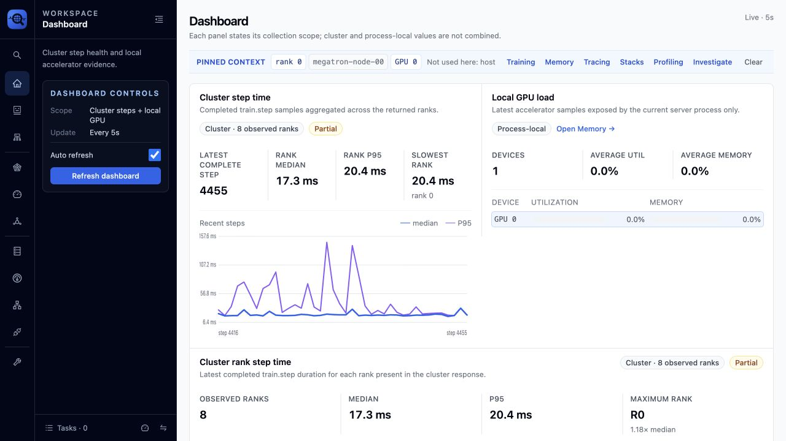
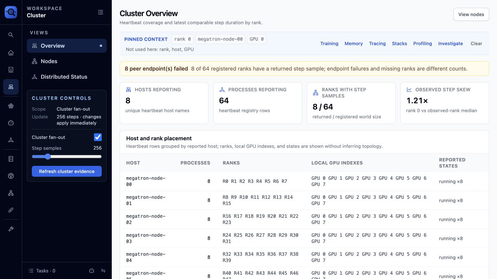
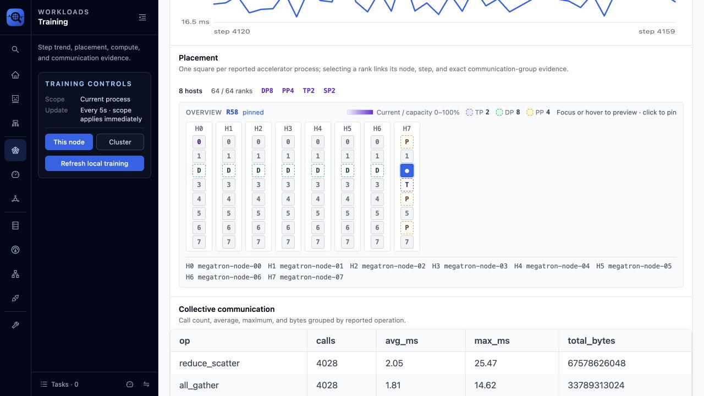
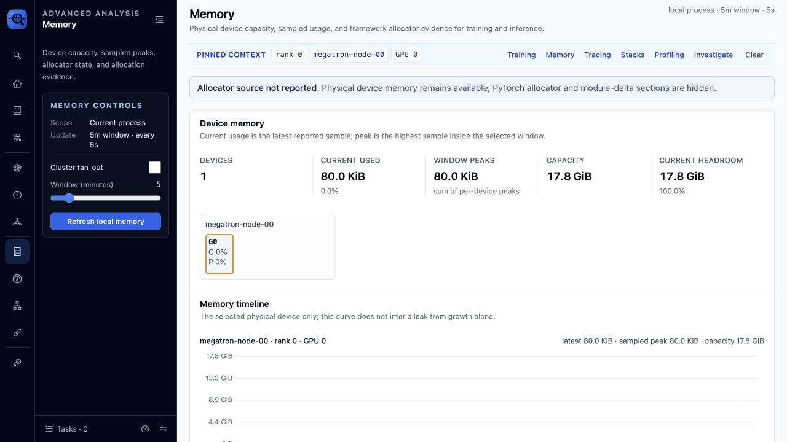
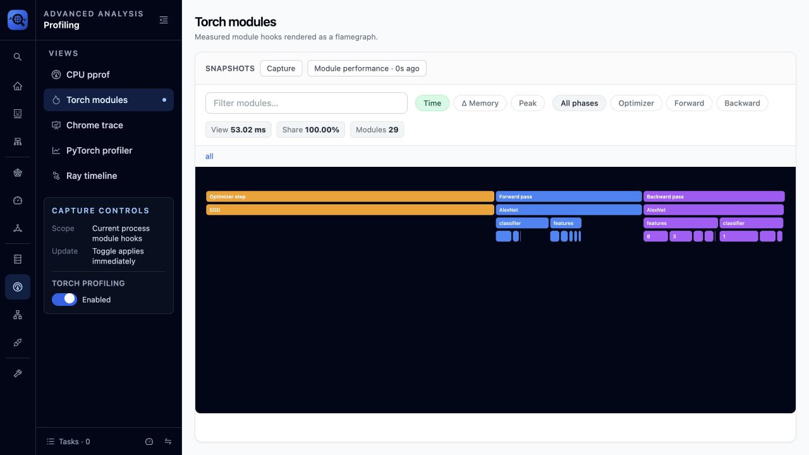
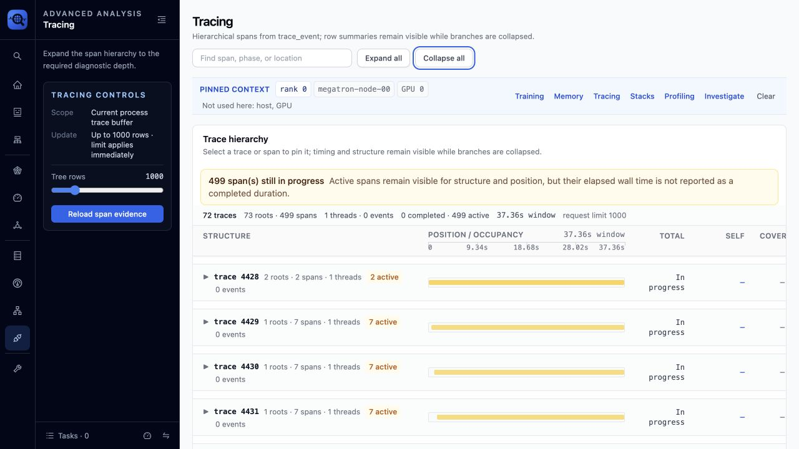
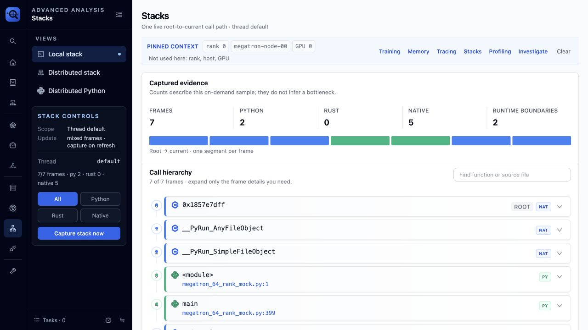
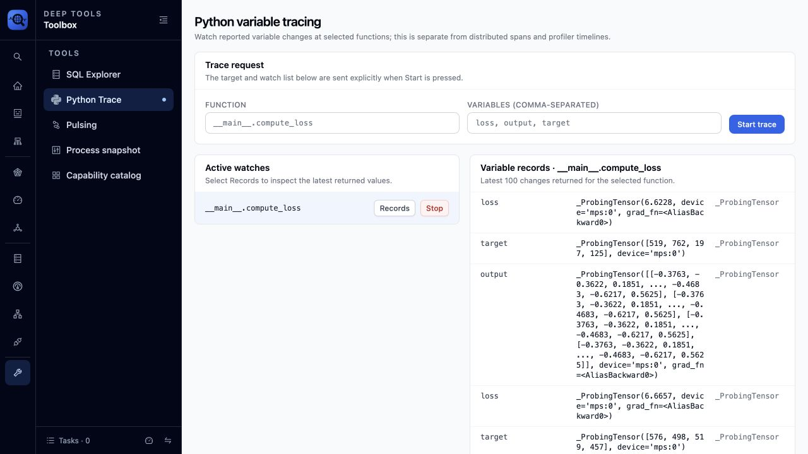

Next Web UI¶
The Next Web UI is an evidence browser for a running Python process or distributed job. It does not declare a diagnosis from a single metric. Each page exposes the scope, freshness, coverage, and source needed to decide what to inspect next.
Start and connect¶
Start the workload with Probing enabled, then open the HTTP address in a browser:
For an already-running Linux process, inject Probing first:
Use PROBING_SERVER_ADDR to choose an explicit bind address. When the endpoint is
reachable from another machine, set PROBING_AUTH_TOKEN and avoid exposing it to
an untrusted network. See Environment Variables.
For a repeatable Torch profiling demo without an ImageNet dataset, run:
PROBING=1 PROBING_PORT=9922 \
PROBING_TORCH_PROFILING=0.01,backward=on \
PYDEVD_DISABLE_FILE_VALIDATION=1 \
python examples/imagenet/imagenet_with_span.py \
-a alexnet -b 4 --dummy --no-validate
Open http://127.0.0.1:9922. 0.01 takes a deterministic full-module snapshot
on one step out of every 100; backward=on additionally measures each module's
backward interval. --dummy removes the dataset dependency. The file-validation
variable only suppresses a debugger warning. If the environment has no python
alias, use .venv/bin/python. Add --max-steps <N> when a bounded demo is more
convenient.
Read the shell before the chart¶
The left rail selects a workspace; the expanded section contains controls for the active page. The page header and evidence context describe what the data covers:
- Scope — local process, selected rank, or cluster fan-out.
- Window — the sample or time range used by the view.
- Freshness — when the evidence was last observed or refreshed.
- Coverage — how many registered ranks actually returned comparable data.
- Context — rank, host/GPU, step, span, and time window carried between pages.
Do not read a local metric as a cluster aggregate. Do not read missing rows as a healthy zero. A partial result remains useful, but its missing peers are part of the evidence.
Recommended investigation path¶
- Use Dashboard to establish scope and find a slow rank or resource pressure.
- Use Cluster to check membership, endpoints, and rank coverage.
- Use Training to compare step trend and verify physical/parallel placement.
- Use Memory to separate device pressure from allocator behavior.
- Use Tracing to locate the span or interval that owns the delay.
- Use Stacks or Profiling to identify the active call path or hot code.
- Use Investigate when a repeatable diagnostic skill is a better fit than manual inspection.
Selections are investigation context, not decoration. Selecting a rank or GPU should keep that entity in scope when the destination page supports it. If a page cannot apply a field, it reports that instead of silently changing its meaning.
Dashboard: establish scope¶

The Dashboard deliberately separates cluster step evidence from process-local GPU load. Compare the labels before comparing values. The rank panel reports returned samples separately from registered ranks; a partial cluster is not presented as a complete distribution.
Use this page to choose the next entity to inspect. Use Training for step history, Cluster for missing ranks, and Memory for device pressure; the Dashboard is not a replacement for those evidence pages.
Cluster: distinguish registered from observed¶

Cluster Overview separates membership from measurement:
- Registered processes/ranks come from heartbeat registration.
- Observed ranks returned comparable samples for the current query and window.
- Endpoint failures count failed fan-out requests; they are not interchangeable with missing-rank count.
The placement table links hosts, endpoints, and ranks. If registration is complete but observations are partial, inspect freshness, endpoint state, and query scope before interpreting rank skew.
Training: trend and placement¶

Step time is shown as key statistics plus a trend, preserving outliers without turning the page into a list of claims. Placement uses one square per reported accelerator process, grouped by physical host and local GPU position. Select or hover a square to highlight its exact TP, DP, and PP groups and their sizes.
The screenshot uses a CPU mock with 8 logical hosts and 8 ranks per host:
world_size=64, TP=2, PP=4, DP=8, SP=2. It validates rank mapping,
group membership, and rendering only. It does not validate real GPU execution,
NCCL bandwidth, or collective latency. See
64-rank Placement Validation.
Memory: keep sources separate¶

The Memory page compares current use, observed peak, capacity, and headroom for the selected device. Device telemetry and the PyTorch allocator have different scopes; when allocator data is not reported, the UI says so rather than deriving it from device usage.
A high peak shows pressure, not necessarily a leak. Confirm sustained growth over a comparable window and correlate it with steps, spans, or allocations before choosing an optimization. See Memory Analysis.
Profiling: choose the evidence granularity¶

Profiling contains five independent views. Choose by the question being asked, not by which visualization looks most detailed:
| View | Evidence and scope | Use it to answer |
|---|---|---|
| CPU pprof | Current-process statistical SIGPROF samples accumulated over a window | Which Python/native call paths are frequently on CPU? |
| Torch modules | Sampled nn.Module and optimizer hooks from python.torch_trace |
Which forward, backward, or optimizer module dominates sampled steps? |
| Chrome trace | Events already present in the current process trace buffer | Where are buffered events positioned in time? This is not the distributed span tree. |
| PyTorch profiler | Explicit, bounded Kineto capture for the requested optimizer steps | Which CPU op, GPU kernel, runtime call, or memcpy owns a short anomaly window? |
| Ray timeline | Explicit capture of Ray task events | Which Ray task or worker interval explains orchestration delay? |
The left control panel always states the affected scope and when a change applies. For example, Torch module enablement applies immediately, while a PyTorch profiler step count applies to the next explicit capture. PyTorch profiler and TorchProbe are separate collectors: enabling the command above does not start Kineto, and their overheads add if both are active.
In Torch modules, use Time, Δ Memory, or Peak to change the metric, then
filter by Optimizer, Forward, or Backward phase. The flamegraph width is share of
the selected payload, not share of the whole training job. Read the snapshot count,
sample policy, step/rank context, and overhead before generalizing from it. At a
1% step rate, an isolated unsampled spike will not appear in module rows.
backward=on is intentionally opt-in because it installs extra tensor grad hooks.
Use it while investigating backward imbalance, then turn it off or lower the rate.
See Profiling and
Overhead measurement for sampling and shadow-baseline
semantics.
Tracing: preserve hierarchy and time¶

Collapsed rows retain counts, timing summaries, and position/occupancy bars. Expand only the branches needed to move from a training step to a module, operation, or child span. An active span is explicitly reported as still in progress; the UI does not infer a completed duration for it.
Stacks: inspect a captured call path¶

Stacks is a point-in-time capture. Start with frame-type and capture summaries, then expand the call tree to the required source-line granularity. A frequent frame is evidence of where samples landed, not proof that the frame caused the slowdown; correlate it with the selected rank, step, and trace interval.
Python Trace: follow selected variable changes¶

Python Trace is a current-process, targeted variable watch. It is separate from distributed spans, Torch module profiling, and the debugger REPL. With the demo workload running:
- Open Deep tools → Python Trace.
- Enter function
__main__.compute_loss. - Enter variables
loss, output, target. - Select Start trace, let several batches run, then select Records.
- Select Stop as soon as the required evidence has been captured.
The catalog can discover fully qualified function names and available locals. A
trace records reported changes to the selected variables; it is not a snapshot of
every local at every source line. Records include function, source line, variable
name, string representation, type, and timestamp. Tensor values may appear as
_ProbingTensor, the tracing wrapper used to observe tensor changes.
Prefer scalars, shapes, counters, loss values, and small identifiers. Large tensor representations are truncated but still add overhead and can expose application data. The UI starts a silent watch, so values are stored for the page rather than printed to the target process terminal. The watch remains process-local; repeat it on a selected rank when comparing distributed behavior.
Empty, partial, and unavailable states¶
| UI state | Meaning | Next check |
|---|---|---|
| No rows | No sample matched the current source, scope, and window | Check collector, context, and refresh time |
| Unsupported / not reported | The source cannot provide this measurement | Enable the collector or use another evidence source |
| Partial coverage | Some peers returned data and others did not | Inspect missing endpoints and heartbeat freshness |
| Active span | The operation has not reported an end | Use structure/position only; do not infer final duration |
| Request error | The query or endpoint failed | Retry explicitly, then open Troubleshooting with the error |
Cluster refresh can fan out to many processes and is therefore explicit on pages where it is costly. Preserve the error and partial data together: hiding either one changes the conclusion a user can draw.
Screenshot provenance¶
These screenshots were captured automatically from the local Next Web UI at
1280x720. The distributed example was produced by
examples/megatron/megatron_64_rank_mock.py; the Profiling and Python Trace images
were produced by the ImageNet command above. The test captured 29 AlexNet module
nodes and variable changes for loss, output, and target. Values such as
duration, freshness, step number, and partial coverage are live observations and
may differ between runs.